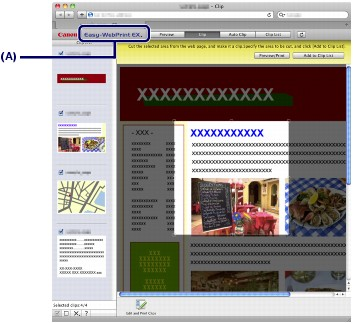

Easy-WebPrint EX provides quick and easy printing of web pages.
You can print web pages automatically resized to fit the paper width without cutting off the sides of pages, or preview and select the desired web pages to print.
Easy-WebPrint EX requires Safari 4 or later (Mac OS X v.10.5 or later).
 Important Important
|
 Note Note
|
The clip function, for example, allows you to clip desired parts of web pages and edit them to print.
For details on operating Easy-WebPrint EX, refer to the online help.

Click Easy-WebPrint EX (A) on the menu bar, then select Help from the pull-down menu to view the online help.